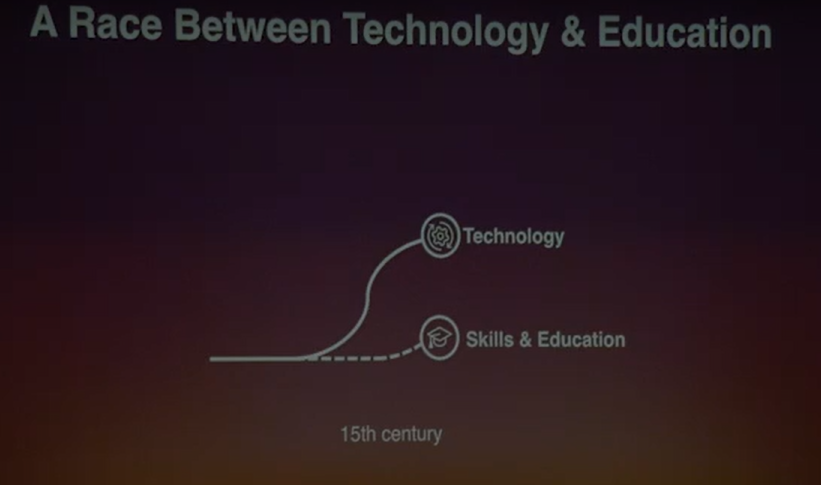

Teaching with AI: Synergising Productivity and Pedagogy
Zahid Asghar, School of Economics, Quaid-i-Azam University, Islamabad

[Generative AI in a Nutshell)(https://blog.crisp.se/wp-content/uploads/2024/01/generative-AI-in-a-nutshell.png)

What are you?
What are you? Explain in one sentence to a 10 year old.
What are you? Explain in two sentences to a university student.
What are you? Explain to a university teacher.
What are you? Explain to an economics research scholar.
Some more prompting
What role could and should generative AI play both in and on the classroom in supporting effective, engaging and active learning for university students?
What challenges AI poses to the traditional role of the teacher in the classroom?
What challenges AI poses to academic integrity and evaluation of students?
International Relations GPT
How do nuclear capabilities shape the strategic calculus of both Pakistan and India?
What will Iqbal say to youth about use of Social Media
Allama Iqbal, known for his deep reflections on spirituality, selfhood (Khudi), and societal progress, would likely have a nuanced view of social media’s impact on youth. Here’s what he might say:
1. Distraction from Purpose:
Iqbal would likely be concerned about social media’s ability to distract youth from their true purpose. He often emphasized the need for deep self-reflection and personal growth, and he might view the constant scrolling and superficial interactions on social media as hindrances to achieving Khudi. He might say, “The pursuit of likes and followers should not replace the pursuit of self-realization and greater goals.”
2. Lost Sense of Identity:
Iqbal believed in the importance of individual and cultural identity. He might see social media as contributing to a loss of self, where youth are too often influenced by external validation and trends rather than their inner values and cultural heritage. He could warn that “In a world of filters and illusions, do not lose your true self. Your identity is not what others see online, but what you discover within.”
3. Potential for Positive Change:
Despite his concerns, Iqbal would recognize the potential of social media as a powerful tool for positive change. He might encourage the youth to use these platforms to raise awareness about important issues, foster meaningful connections, and promote justice and knowledge. He could say, “Use your voice on these platforms as a means to awaken and uplift, not just to entertain.”
4. Spiritual and Intellectual Balance:
Iqbal would likely urge the youth to balance their time on social media with activities that promote intellectual growth and spiritual reflection. He might remind them that while social media can be a tool for learning and connection, it should not replace the deeper, more personal journey of seeking knowledge and spiritual fulfillment. He might caution, “Do not let fleeting moments of entertainment steal the time meant for the pursuit of wisdom and self-enlightenment.”
5. The Power of Influence:
Iqbal would be keenly aware of social media’s power to influence minds. He would advise youth to be discerning in their consumption of content, warning them not to fall prey to misinformation or hollow trends. He might say, “Just as a gardener tends to what he plants, so too must you guard your mind from the weeds of falsehood and idle talk.”
In summary, Iqbal would likely see both the dangers and the opportunities in social media. He would call on the youth to use these platforms wisely, ensuring they foster self-growth, preserve cultural identity, and contribute meaningfully to society, rather than getting lost in the distractions of the digital world.
New Wave of Technology
What does the wave of technology mean for humanity?
Historical discoveries: Fire, the wheel, printing press, steel, harnessing electricity
Transformation of human civilization through technological advancements
Advanced AI and biotechnology
- Benefits: Unlock secrets of the universe , Cure diseases, Create a healthier, sustainable world
The Dangers
- Manipulating DNA: implications for individuals and ecosystems
- Choice: Unparalleled possibilities vs. unimaginable perils
- Exponential speed of change in technology (e.g., LLMs)
The Rise of AI
Four years ago, no one believed in LLMs, now everyone talks about them
Future: Superintelligence in the next decade?
Question: How do we respond?
The Dilemma
Replicating our unique intelligence
The Luddite reaction: fears, bans, moratoriums
Challenge: balancing immense benefits and potential perils
The Containment Problem
Technology spreads exponentially, nearly impossible to stop
Examples: Industrial Revolution, AI, Synthetic biology
Inventions cannot be uninvented; knowledge proliferates
Generative AI in a Nutshell


LLMs


Generative AI in a Nutshell

Race between Education and Technology
The Impact of AI on Education
AI is increasingly becoming a part of educational and professional landscapes.
The core issue is not just preventing cheating but recognizing that AI can accomplish college-level tasks.
Graduating students who can write only as well as AI seems like a recipe for unemployment.
Even if you can prevent cheating, the real problem is that AI can do college-level work.
AI as a Partner in Learning
AI can help accelerate achievements both in educational settings and beyond.
Educators need to guide students to be better thinkers, particularly in how they use AI.
AI is becoming a new, powerful partner, in both the classroom and the real world, that can accelerate accomplishment and achievement.
It is the job of educators to help students become better thinkers. Our new job is to help them become even better thinkers with AI.
The Role of AI in Idea Generation
AI can assist in generating ideas, refining questions, and clarifying thought processes.
Humans still need to iterate and prototype, but AI can generate a high volume of ideas, which humans often struggle with.
The best way to have a good idea is to have lots of ideas. Humans will need to continue the process of prototyping, testing, and iterating, but humans consistently struggle to produce large quantities of different and new ideas.’
AI’s Role in Education: Practical Applications
AI can help with routine educational tasks such as grading, creating assignments, learning outcomes of a lecture and managing student interactions.
Answering emails? Summarizing documents? Grading papers? Creating new assignments, activities, or assessments?
Your job is changing,& an AI collaborator could make it better & easier. Upload an existing syllabus and ask for improvements, or start with a new course description or learning outcomes.
Ethical Challenges and Considerations
While AI detection tools exist, they are not foolproof, and reliance on them alone could have unintended consequences.
The rise of AI demands a reevaluation of academic standards and integrity.
Reducing cheating is good, but we also need to rethink our standards, what we are really hoping to teach, and what academic integrity will mean in this new era. More students will use AI if they have motive, means, and opportunity.
AI in Grading and Assignments
AI can help make grading more efficient and consistent, but it also changes the nature of what grades represent.
The use of AI in education should aim to prepare students for real-world skills, not just academic performance.
Can grading become a tool to prepare students with better real-world skills? The traditional days of grading responses to prompts are over. Since all of us will be thinking in dialogue with AI…
Future Implications and the Role of AI
AI’s integration into education is inevitable and can be beneficial if used properly.
Students and educators need to learn how to collaborate with AI to enhance learning outcomes.
Banning AI from the classroom will backfire, just as Wi-Fi kill switches did. Graduates without the ability to think, write, and work with AI will be at a serious disadvantage for future jobs.
Embracing AI in Education
AI offers both challenges and opportunities; educators need to guide students in using AI effectively.
The focus should be on enhancing critical thinking and leveraging AI as a tool for better learning outcomes.
Building AI feedback into assignments can increase motivation, learning, and agency. The point to all of these is not predictive accuracy, but feedback to help us think.
Comming Wave & Jobs
“AI offers vast tools for augmenting workers and enhancing work. We must master these tools and make them work for us.” David Autor
As per David Autor, the problem is that older models assumed technology ” might raise some boats more than others, but would’nt lower any boats. However, as digital technology transformed the globaly economy there was “lots of evidence people were made worse off.”
The Future of Education with AI
The Future of Education with AI
- “AI in Education: A New Era of Learning”
- “The Positive Potential of AI in Education”
- “AI as a Catalyst for Educational Transformation”
- “Empowering Teachers and Students with AI”
- “The Cheating Crisis: AI Threatens Education”
- “AI in Education: Undermining Learning?”
- “AI as a personal tutor”
- “AI as a teaching assistant”
AI Tutoring : Khanmigo , Conmigo
“Benjamin Bloom’s 2 Sigma Study”
- “1-to-1 Tutoring: Two Standard Deviation Improvement”
- “Unlocking Potential: From Average to Exceptional Students”
- “AI Tutoring: A Scalable Solution to the 2 Sigma Problem”
“Introducing Khanmigo: Your Personal AI Tutor”
“Enhanced Learning Experience: Socratic Conversations”
“AI Assistance in Math, Programming, and Literature”
“Empowering Students with Personal Coaching”
“Guidance, Academic Support, and Career Counseling”
“AI-Powered Coaching for Every Student”
Two Sigma Problem

AI Writing Coach
- “Collaborative Writing with AI Assistance”
- “Enhancing Writing Skills: AI-Student Collaboration”
- “Feedback, Guidance, and Improvement in Writing”
Reading Comprehension
- “Interactive Reading Comprehension with AI”
- “Analyzing Texts, Answering Questions, and Providing Insights”
- “Enhancing Critical Thinking and Analysis Skills”
“AI in the Classroom: Indo-Pak History Lesson”
“AI-Powered Teaching Assistant for Teachers”
“Lesson Planning, Explanation, and Progress Monitoring”
“Transformative Potential of AI in Education”
“Enhancing AI Capabilities for a Magical Learning Experience”
“Combining Human Intelligence with AI for Educational Advancement”
Paul Samuelson as your Assistant
Give a learning outcomes on consumer theory lecture in 3 points with 15 words for each point
Differentiate between Marshalian and Hicksian demand function, restrict response to 50 words
Explain it in little detail, restrict response to 100 words
Give some mathematics
Provide a real life example
Give slides on Marshallian and Hicksian demand function with learning outcomes
Provide a quiz on Marshallian and Hicksian demand function
The 3 Principles of a Learning Accelerator
 Blended Learning
Blended Learning
A mix of digital and face-to-face teaching methods to create a flexible learning experience.
 Personalization
Personalization
Personalization focuses on customizing the learning experience to the unique needs and goals of individual learners.
 Community
Community
Community builds a network of support and collaboration among learners to enhance the overall learning experience.
Text to image
Prompt : Create an image for QAU students sitting as a community learners in a classroom.
Old vs New Model

Yet, our educational institutions have not evolved much. We still put people in lecture halls for one-size-fits-all teaching, and many companies only offer a couple of days of training per year. This model is outdated.
Things not discussed
Customised advanced tools: Policy Advisor, Fiscal Policy Advisor, Economics Expert,…
Coding, Mathematics, Data Analysis …
Technology’s Impact on Humanity
Containment: Can We Do It?
Navigating the Coming Wave
AI and Wars
How Ukraine countered largest every military deployment of Russia
AI and the Future of Work
Prompt
You are hiring a “waiter” The typical daily wage rate is PKR 800. You have 2 candidates. Person 1: Has 1 year(s) of experience in this role. Requests PKR 1100. Person 2: Has 0 year(s) of experience in this role. Requests PKR 900. Who would you hire? You have to pick one.
Explain Solow Growth model to an undergraduate studet in 70 words.
Simulate the Solow growth model and plot the results in a four chart.
Resources
Re-inventing Education for the Digital Age | David Middelbeck | TEDxMünster
Policy Advisor
Fiscal policy advisor
Economics expert
Tutor me
Duolingo
R for economics and Econometrics
Stata ai
curipid.com Lessons in seconds
murf.ai Text to speech
Myheritage
Snythesia video maker
Books I found useful in 2024


Digital Transformation in Education
The Role of AI in Shaping the Future of Learning and Work
Slide 2: AI and the Future of Work
- AI Disrupts Labor in Three Ways:
- Substitution: AI replaces workers in routine tasks.
- Complementarity: AI enhances worker productivity.
- Creation: AI creates new tasks and jobs.
- 40% of the Global Economy is exposed to AI, affecting both low- and high-skill jobs.
Slide 3: Impact on Advanced and Emerging Economies
- Advanced Economies: 60% of the workforce is exposed to AI, creating both opportunities and challenges.
- Emerging Economies: Less exposure but fewer opportunities. AI could exacerbate inequality.
Slide 4: AI’s Impact on the Workforce
- Job Polarization: Some jobs will benefit from AI, while others may disappear.
- AI and Inequality: AI helps less experienced workers but worsens inequality overall.
- New Skill Requirements: Emphasis on AI literacy and higher cognitive skills.
Slide 5: Reinventing Education with AI
- Rethinking Learning Outcomes: Preparing students for an AI-driven future.
- Shifting Focus: Moving from traditional instructivism to constructivism, leveraging AI for personalized learning.
- Generative AI: Can generate lecture content, quizzes, and improve student engagement through quick feedback.
Slide 6: AI Tools for Educators
- AI as a Teaching Assistant: Tools like ChatGPT can generate content (MCQs, lecture slides) to reduce administrative burdens.
- Enhancing Learning: AI tools promote active learning, helping students practice retrieval and apply concepts in real-time.
- Assessment & Integrity: Challenges posed by AI in maintaining academic integrity; need to rethink assignments that are AI-proof.
Slide 7: Challenges of AI in Education
- Hallucination: AI sometimes provides incorrect or fabricated information.
- Over-reliance: The risk of students becoming too dependent on AI for academic tasks.
- Academic Integrity: AI’s undetectable presence poses challenges to student evaluation.
Slide 8: Future Trends in Education
- Inclusive AI for Learning: AI can support underserved students, especially in developing regions.
- Curiosity and Creativity: AI should enhance curiosity and creativity, not replace them.
- AI-Driven Assessments: New ways to evaluate students’ critical thinking and problem-solving abilities.
Slide 9: Conclusion
- Digital Transformation: AI is reshaping education and jobs, requiring educators to rethink teaching methods and learning goals.
- Preparing for the Future: Students must be equipped with the skills to thrive in an AI-driven world—emphasizing creativity, critical thinking, and collaboration.
Conclusion
Education needs to catch up with technology. There are many ways for us to contribute, whether as teachers, parents, students, or colleagues. Together, we can help build the education system of the future, one that is personalized, flexible, and better suited to the challenges of the 21st century.